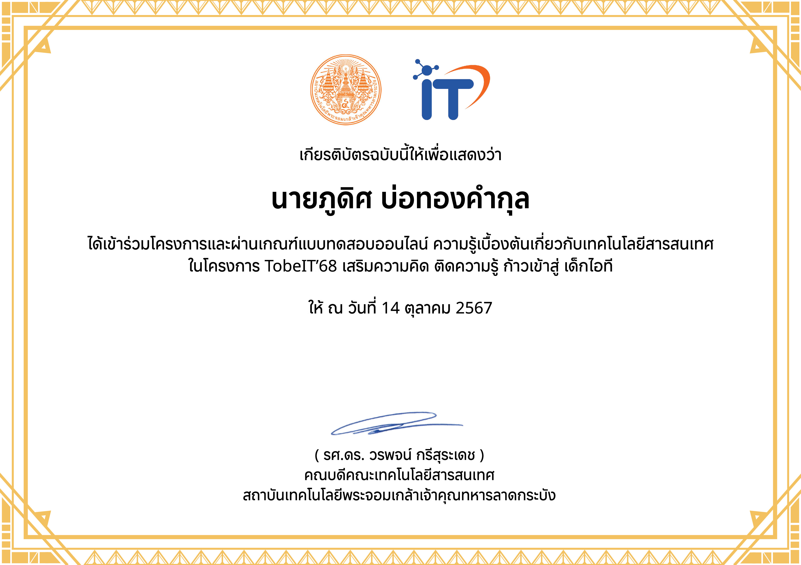
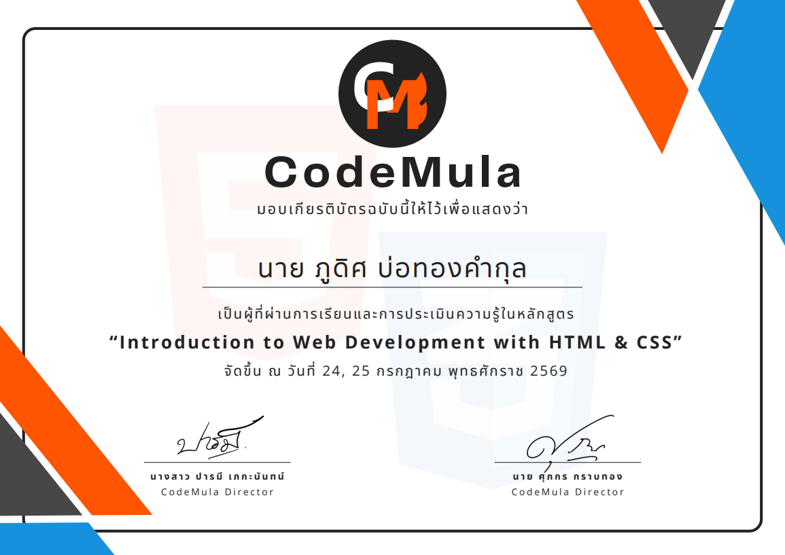
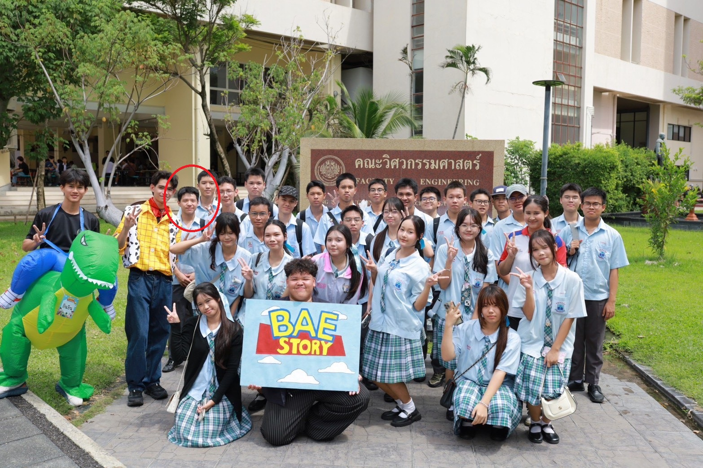
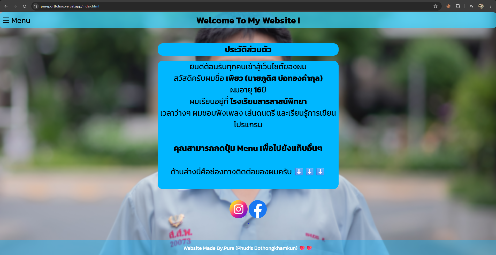
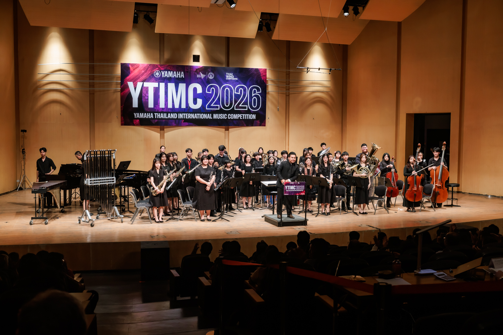
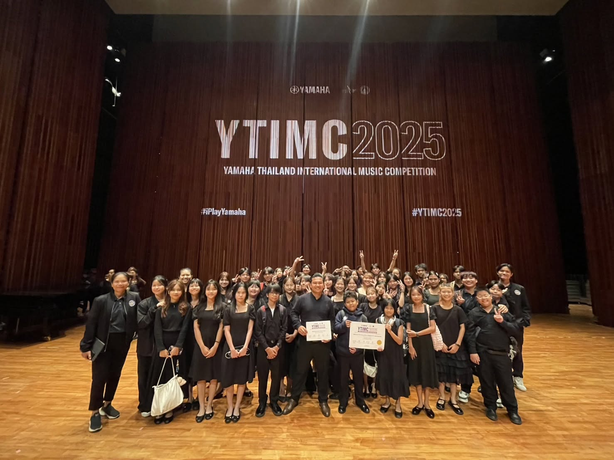
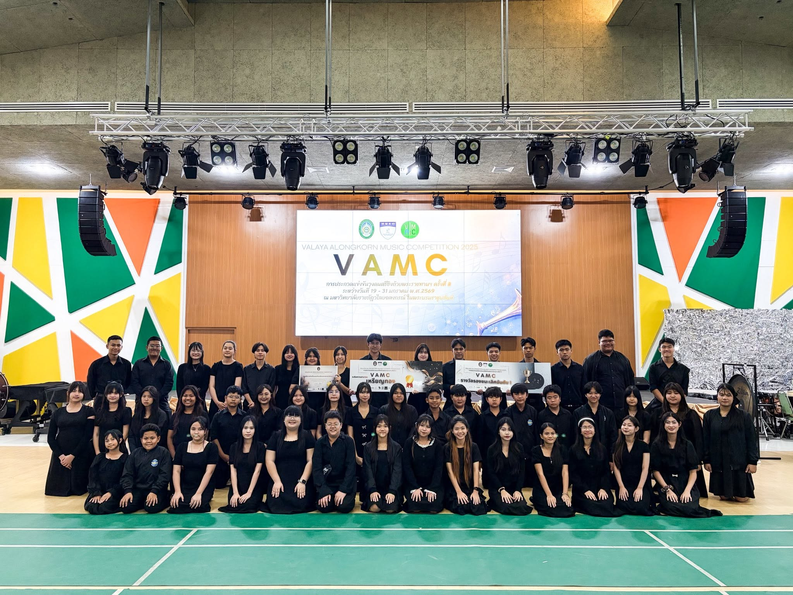

Introduction to Computer Science
BorntoDev Academy - พื้นฐานวิทยาการคอมพิวเตอร์
-ได้เรียนรู้หลักการเขียนโปรแกรมเบื้องต้น ทักษะการคิดเชิงตรรกะและแก้ปัญหาอย่างเป็นระบบ

Fundamental Web Dev (HTML5 & CSS3)
BorntoDev Academy - พื้นฐานการพัฒนาเว็บไซต์
- ได้เรียนรู้การเขียนเว็บไซต์พื้นฐาน การใช้ Html & CSS3

Introduction to JavaScript
BorntoDev Academy - พื้นฐานภาษา JavaScript
- ได้เรียนรู้พื้นฐานของภาษา JavaScript

TobeIT'68 Certificate
โครงการ TobeIT'68 คณะเทคโนโลยีสารสนเทศ
สถาบันเทคโนโลยีพระจอมเกล้าเจ้าคุณทหารลาดกระบัง
ได้เรียนรู้แนวการคิดความเข้าใจด้านไอที และได้ทำโจทย์ปัญหาผ่าน g-learn ภาษา Python

CodeMula Certificate
คอร์สเรียนออนไลน์ HTML & CSS พื้นฐาน

KMITL เปิดบ้านวิศวะ K-Engineering World Tour Competency Challenge 2026
ได้เข้าร่วมกิจกรรม Open House ของสถาบันเทคโนโลยีพระจอมเกล้าเจ้าคุณทหารลาดกระบัง (สจล.) คณะวิศวกรรมศาสตร์ได้เดินเยี่ยมชมฐานของพี่ๆ มีการให้ความรู้แนะแนวการศึกษาต่างๆ และได้ลองลงมือทำ ได้เปิดโลกวิศวกรรม และได้รับแรงบันดาลใจจากพี่ๆในมหาวิทยาลัย

เว็บไซต์แรกที่ผมทำ
ผมได้นำความรู้ที่มี นำมารวบรวมอยู่ในเว็บเดียวกัน
กดเพื่อเยี่ยมชมเว็บไซต์

YTIMC 2026
ได้เข้าร่วมการแข่งขันดนตรี YTIMC2026 ชิงถ้วยพระราชทาน สมเด็จพระกนิษฐาธิราชเจ้า กรมสมเด็จพระเทพรัตนราชสุดาฯ สยามบรมราชกุมารี
วันที่ 4 พฤษภาคม 2569
🏅รางวัล ระดับความสามารถเหรียญทอง : คะแนน 90.63

YTIMC 2025 ณ หอประชุมมหิดลสิทธาคาร มหาวิทยาลัยมหิดล ศาลายา ในวันที่ 7 พฤษภาคม 2568
1.รางวัลระดับความสามารถเหรียญทอง🏅
2.รางวัล Excellent Conductor🪄

รายการ The 8th Valaya Alongkorn Music Competition 2025
✨ประเภท Concert Band รุ่นไม่เกินมัธยมศึกษาปีที่ 6 ชิงถ้วยเกียรติยศ
🏆รางวัลรองชนะเลิศอันดับ 1
🏅ระดับความสามารถเหรียญทอง 91.66 คะแนน

The 4th North Eastern Winds Festival 2023 รุ่น Secondary Concert (Championship Division )
: รางวัลเกียรตินิยมอันดับที่ 1 เหรียญทอง🥇
: รางวัล Best Marches🥇
: รางวัล Best Choice Piece🥇